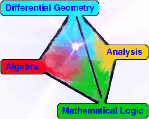
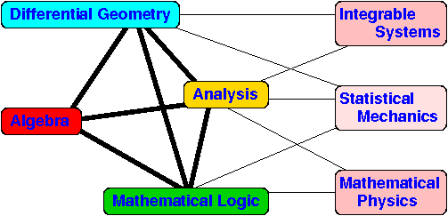

Paul Martin Home
Grad School Research
Grad School
My Leeds Algebra Grad Course (2008/11) including BOOK LINKS
MAGIC Graduate Courses in Mathematics at Leeds and beyond
Projects
Hall of Fame
On writing up etc
Leeds Postgrad Conference
Assorted rough seminar notes/transcripts
Diagram algebras in Statistical Mechanics
On diagram categories, representation theory and Statistical Mechanics
RT meets Statistical Mechanics
RT inspired by Statistical Mechanics
Utilities
My Xfig Library
(work in progress!)
latex notes
;
more latex notes
;
mathml/latex notes
a nice short AMS math/latex guide
Valaniwiki
Burkewiki
JOURNAL LINKS:
Elsevier
(free access to Maths journals!)
PROLA
(go in via
Leeds library
)
Seminar series
Leeds Stat Mech Discussion Group
LYLT (Leeds-York Lie Theory)
Leeds Algebra Seminar
A tilting homepage
Statistical Mechanics pages
Quantum information pages
Leeds algebra group homepage
Stuff to Read
Joyal - Street: Geometry of tensor calculus I
Kauffman's link to Stillwell on WIRTINGER PRESENTATION
E L Green on Graphs with relations, coverings and group graded algebras, TrAMS ... (1983)
mystery doc!
Ring that is right artinian but not left...
